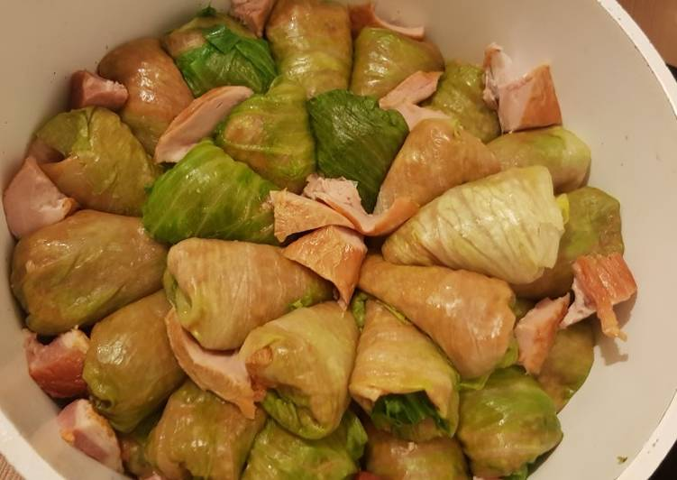
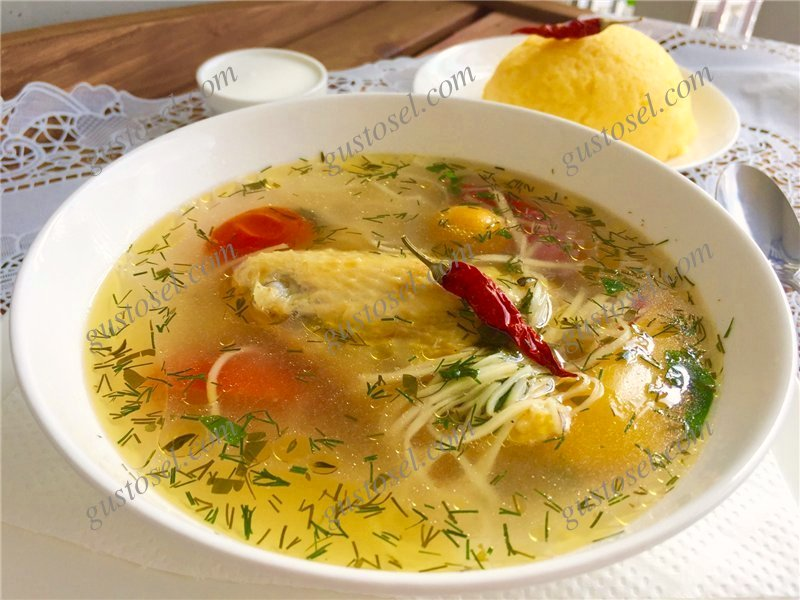
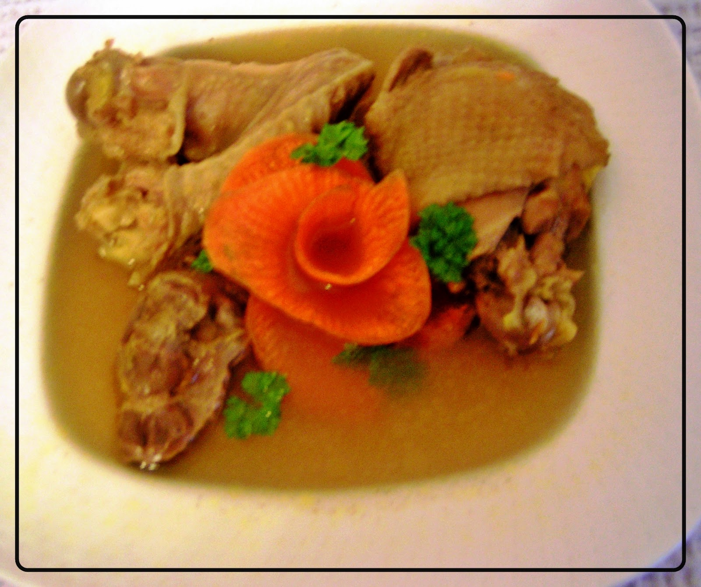
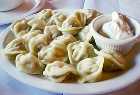
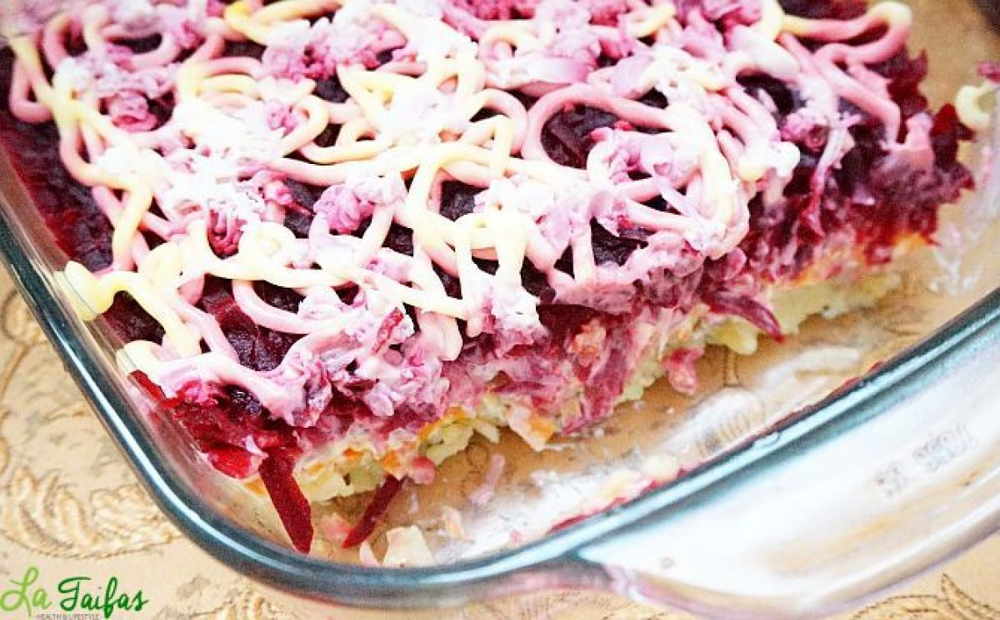
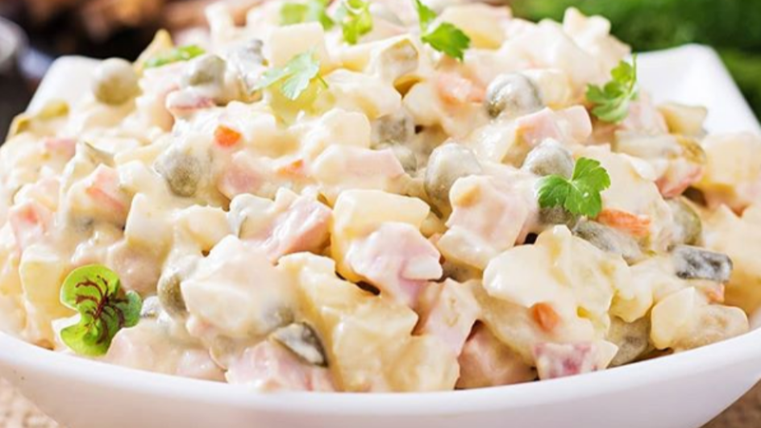

Bucate
Sarmale

- 0,5 kg. carne de porc (carnea să aibă și grăsime)
- 200 g morcov
- 200 g ceapă
- 100 g varză proaspătă trecută prin răzătoarea măruntă
- 1 kg orez
- 200 g pastă de tomate
- 200 g ulei de casă
- frunze de dafin
- boabe de piper mirositor
- mix de piper iute
- 1 linguriță coreandru măcinat
- sare după gust
- foi de varză de la 3 căpăţini (depinde cât de potrivite le ve-ţi găsi).
Ingridiente:
Mod de preparare:
- Pregătim varza. Desprindem frunzele. Pentru aceasta vom avea nevoie de o cratiță în care vom pune apă, sare după gust și o vom pune pe foc. Când apa începe să fiarbă, cufundăm varza în apă pe 1-2 min. Când frunza de deasupra începe să se înmoaie, o înlăturăm de pe varză. iarăși cufundăm varza în apă. La fel procedăm cu toate frunzele. Dacă frunzele nu sunt suficient de moi, le mai opărim câteva secunde. Frunzele opărite le divizăm în părți mai mici sau mai mari.
- Pregătim umplutura. Carnea o tocăm şi o călim în ulei timp de 3 min. Aparte în ulei călim, la foc mic, ceapa tăiată cubuleţe mărunte, morcovul, varza trecută prin răzătoare pâna se înmoaie puţin. Adaugăm pasta de tomate și mai călim toate legumele încă 5 min, sărăm după gust.
- Orezul îl spălăm în câteva ape până ne asigurăm că este curat și îl încorporăm în legumele şi carnea răcite. Adăugăm condimentele, verificăm dacă mai necesită sare .
- La fundul oalei punem câteva frunze de varză sau o farfurie, boabe de piper mirositor şi cîteva frunze de dafin. Punem sarmalele în oală, printre rânduri mai repetăm cu condimentele. Acoperim sarmalele aranjate în oala cu frunze de varză, ca să nu ardă deasupra de la capacul încins.
- Turnăm deasupra, peste sarmale apă clocotită + 50 gr pastă de tomate + sare după gust (1 mlm. deasupra sarmalelor).
- Punem capacul şi le dăm în cuptorul supraîncălzit din timp. Sarmalele numai încep a fierbe şi facem focul mic, mic. Le coacem 1,5 ore sub capac şi o ora fară capac.
Zeamă

- 1 găină mare de casă
- 1 ardei gras roșu
- 1 ardei gras galben
- 4-5 roșii
- 2 morcovi
- 2-3 rădăcini de pătrunjel
- 2 cepe mari
- 2-3 frunze de dafin
- câteva boabe de piper mirositor
- câteva boabe de piper iute
- pătrunjel verde, leuștean
- borș acru de casă.
Ingridiente:
Mod de preparare:
- Se bucățește găina (se despart aripile și șoldurile de trunchi, se taie gâtul și trunchiul, se taie în 3 părți). Se înlătură plămânii din coșul pieptului. Se pune carnea în apă pe 1-2 ore să iasă sângele. Se spală în câteva ape. Se pune apa în ceaun la fiert. Când apa este călduță, se pune carnea câte o bucată până la ultima. Se ridică spuma ce se acumulează. După ce spuma a fost adunată, se face focul mic. Se pune puțină sare pentru ca carnea să fiarbă mai repede. Peste 40 - 50 min de la fierbere, se adaugă ceapa intreagă, morcovul tăiat rondele sau cubulețe, rădăcina de pătrunjel, roșiile. Peste câteva minute, adăugăm ardeii tăiați cubulețe și mirodeniile.
- Când carnea este gata, zeama se acrește cu borș de casă. Se mai adaugă sare după gust. Când zeama începe a fierbe, se pun tăiețeii.
- Când tăiețeii se ridică la suprafață, se adaugă verdeață.
- Se pune capacul și se stinge focul.
Racitura

- 1 cucoș
- 1 ceapă
- 1 morcov
- 2 frunze de dafin
- ouă de găină sau de prepelițe, verdeață pentru decor
Ingridiente:
Mod de preparare:
- Punem carnea la fiert şi luăm spuma. Carnea trebuie să fiarbă la cel mai mic foc fără capac. Abea să se observe că fierbe.
- Adăugăm ceapa, morcovul, frunza de dafin.
- Lăsăm răciturile să mocnească pe foc 3- 3,5 ore (depinde de carne).
- Înlăturăm cu o lingură grăsimea (o putem întrebuința în prepararea altei mîncări).
- Când carnea este fiartă, o punem într-o farfurie și pregătim zeama.
- Când zeama s-a mai răcit, strivim vreo 4 căței de usturoi, o amestecăm lin și o lăsam să se limpezească vreo 20 min.
- Între timp, punem carnea frumos în farfurii. Pregătim din timp o sită mică și un tifon pe care îl punem deasupra. Cu ajutorul unui poloninic, turnăm zeama în farfurii prin sită. În aşa fel, tifonul va absoarbe o parte din grăsimea rămasă, iar zeama va fi şi mai limpede.
- Dacă mai rămân cristale de grăsime pe suprafaţă, le putem înlătura şi cu un şervete de hârtie. Putem decora răciturile cu ouă fierte, morcov sau verdeaţă sau le putem servi fără decor.
Pelimeni

- 1 ou
- 1 pahar de apă
- 1 linguriță sare
- 600 g făină de grâu
- 250 g carne de vită tocată
- 250 g carne de porc tocată
- 1 ceapa mare
- 1 cățel de usturoi
- sare
- piper negru
Ingridiente:
Pentru aluat:
Pentu umplutură:
Mod de preparare:
- Se pune făina într-un bol și se face o gaură în mijloc. Acolo se adaugă sarea, oul bătut și apa. Se trage treptat făina peste apa, amestecând cu degetele până aluatul se leagă.
- Se framântă aluatul cu mâna până e omogen. Exclusiv cu mana, framantati-l macar 10 minute.
- Se pune aluatul pe masa de lucru dată cu făină și se acoperă cu un bol. Se lasă să stea 30 minute.
- Umplutura: se călește ceapa dată pe răzătoare în ulei până-i dispare mirosul de crud. Se adaugă peste carne toate ingredientele și se amestecă până se omogenizează. * în umplutură mai puteți pune morcov dat pe răzătoarea mică, cimbru, 1/2 cățel de usturoi, pătrunjel tocat.
- Se imparte aluatul în bucăți cu care puteți lucra ușor
- Pe masa dată cu făină se intinde aluatul foaie subțire.
- Cu un pahar de 6 cm diametru decupati cercuri din aluat.
- Puneti pe fiecare disc câte 1 linguriță de umplutură. Sigilați umplutura înăuntru, apăsând bine de jur imprejurul cărnii. Veți obține o semilună. Uniți capetele semilunii, suprapunându-le un pic. Apăsați bine acolo.
- Așezați pelimenii formați pe hârtie de copt sau o suprafață dată cu făină.
- Se pune o oală mare cu multă apă, sare și o frunză de dafin la fiert. Când fierbe, dați focul pe mai mic, astfel încât apa să clocotească doar ușor.
- Se pun pelimenii în apă (nu-i înghesuiți, ca să nu se lipească intre ei; fierbeți-i în ture) și se fierb 3 minute după ce s-au ridicat la suprafață (cca 5-6 minute în total).
- Se scot pelimenii într-un bol și se stropesc cu puțin ulei, să nu se lipească între ei.
- Se servesc calzi, cu smântână și mărar tocat sau cu sos de roșii.
SalatăȘubă

- 4 cartofi fierți
- 2 sfecle roșii fierte (1 mai mică, alta mai mare)
- 1 scrumbie marinată (sărată)
- 1 morcov mare fiert
- 1 ceapă mijlocie
- 200 gr maioneză
- 1 ou fiert pentru decor
- verdeață pentru decor
Ingridiente:
Mod de preparare:
- Pentru aranjamentul salatei avem nevoie de un cerc. Putem folosi chiar cercul unei tave pentru torturi. Ungem marginile cercului cu ulei. Îl fixăm pe un platou sau pe o farfurie rotundă.
- Cartofii și o sfeclă o dăm prin răzătoare. Cealaltă sfeclă mică o fărâmițăm în blender cu o lingură de maioneză. Ceapa o tăiem cuburi mărunte. Scrumbia o curățim de oase și piele și o tăiem mărunt. Acum este totul pregătit pentru aranja salata în straturi.
- Primul strat va fi cartofii dați prin răzătoare. Urmatorul strat va fi ceapa taiată cuburi.
- Punem maioneza proporțional deasupra cepei.
- Adăugăm deasupra maionezei scrumbia tăiată.
- Punem morcovul dat prin răzătoare, apoi iarăși maioneza.
- Ultimul strat va fi sfecla roșie dată prin razătoare.
- Pentru decorul de deasupra vom întinde cu o lingură sfecla dată prin blender.
- Salata este gata. Scoatem pe sus cercul atent, în așa fel încât să nu stricăm aspectul salatei.
- Pentru a decora salata, vom tăia oul în patru părți. Vom pune cele patru părți pe salată. Vom ornamenta salata cu maioneza. Vom pune câteva stible de pătrunjel sau mărar. La dorință, vom pune sare între straturi.
Salata Boeuf

- 4 buc. cartofi fierți
- 1 buc. morcov fiert
- 3 buc. ouă fierte
- 200g mazăre conservată
- 200j castraveți murați
- 200g parazier
- maioneză după gust
- sare după gust
- piper negru după gust
Ingridiente:
Mod de preparare:
- Morcovul și cartofii îi spălăm și îi fierbem până se fac moi. Fierbem ouăle.
- Răcim și curățim morcovul și cartofii. Tăiem cubulețe mici.
- Adăugăm ouăle tăiate mărunt.
- Castraveții de asemenea îi tăiem și îi adăugăm în salată, precum și mazărea conservată.
- A venit timpul parizerului. Pentru cei cărora nu le plac mezelurile fierte, acestea pot fi substituite cu carne fiartă de pui sau vită.
- Asezonăm cu maioneză. Condimentăm cu sare și piper după gust. La fel, după preferință poate fi adăugată ceapă tăiată mărunt și pătrunjel. Amestecăm și aranjăm în salatieră.